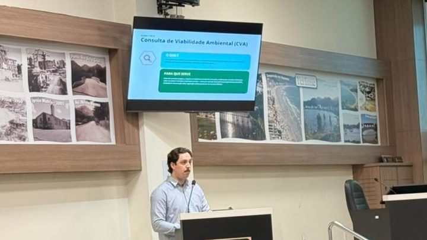

Quem compra imóvel em Itapema passa a ter pelo menos 15 dias úteis para contestar a conta do ITBI
A outra regra aprovada pela Câmara na semana passada.
A 28ª Sessão Ordinária de 2026 é nesta terça-feira, 8 de setembro, em formato limpa-pauta: sem manifestação de morador e sem entrega de homenagem, só votação. Entre as 21 matérias está o projeto que quer criar em Itapema um programa de parceria público-privada para financiar obra pública. Um pedido de urgência trata do prazo de validade dos alvarás de construção já emitidos.
Em 30 segundos · Modo de Leitura, formato original Santa Informa
A Câmara de Itapema se reúne nesta terça.
É a 28ª Sessão Ordinária de 2026.
O formato é limpa-pauta.
Quer dizer: só votação.
Não tem Tribuna do Povo.
Não tem entrega de homenagem.
São 21 matérias na Ordem do Dia.
A casa tem mais de 590 projetos parados.
O destaque é o PL nº 27/2026.
Ele cria uma parceria público-privada.
Empresa poderia bancar obra pública.
O autor é Sidnei Sassaki, do Progressistas.
Outro projeto trata de alvará de construção.
Ele vale para quem já tem licença.
O prazo passaria a ser de 3 anos.
A sessão é no plenário, na Rua 120.
E passa ao vivo no YouTube da Câmara.
Poder PúblicoPublicada em Redação Santa Informa
A Câmara de Vereadores de Itapema faz nesta terça-feira, 8 de setembro, a 28ª Sessão Ordinária de 2026, e ela vem no formato que a própria casa chama de limpa-pauta. Não tem Tribuna do Povo e não tem entrega de homenagem. O tempo todo vai para votação. A Ordem do Dia traz 21 matérias, e ainda podem entrar outras se o plenário aprovar pedido de urgência. A Câmara explica a decisão com um número: hoje são mais de 590 projetos em tramitação na casa. A sessão é no plenário, na Rua 120, e passa ao vivo no canal oficial da Câmara no YouTube.
O destaque da pauta é o PL nº 27/2026, de Sidnei Sassaki (Progressistas), que quer criar o Programa Municipal de Financiamento da Infraestrutura Pública. Na prática, ele abre caminho para a Prefeitura receber dinheiro, material ou serviço de empresa privada e usar isso para bancar obra pública, no todo ou em parte, e para manter equipamento público. Segundo o autor, o texto foi pensado para não prever benefício fiscal, não autorizar contrapartida incompatível com serviço público essencial e não afastar a lei geral de licitações e contratos. A Câmara informa que o modelo já é adotado em cidades vizinhas, como Porto Belo, onde o instituto de empresários locais colocou R$ 1 milhão em estudo e projeto de obra pública. O projeto entra em discussão e votação única.
Entre os pedidos de urgência está o PLC nº 13/2026, de Yagan Dadam (PL), e ele mexe na vida de quem já tem obra encaminhada. A Lei Complementar nº 172/2026 fixou em três anos a validade dos projetos aprovados e dos licenciamentos. O PLC quer estender o mesmo prazo para o alvará concedido sob a regra antiga, contado da data de emissão. Quem tinha prazo menor passaria a ter três anos. É a terceira mexida em poucas semanas nas regras de quem compra e constrói na cidade: em 1º de setembro os vereadores aprovaram o rito para contestar o valor do ITBI, e no começo deste mês a FAACI apresentou duas certidões ambientais novas para prédio de 10 apartamentos ou mais. Se a urgência passar, o PLC ainda precisa de segunda votação em outra sessão.
Boa parte da pauta é serviço direto. O PL nº 723/2025 quer estabelecer prazo máximo para consulta médica eletiva do SUS em Itapema, e também depende de urgência. O PL nº 695/2025 prevê botão de pânico nas escolas e nos Centros de Educação Infantil da rede municipal. O PL nº 722/2025 cria o programa de farmácias credenciadas para remédio da lista municipal. O PL nº 436/2026 institui o Parada Segura, com embarque e desembarque facilitado no transporte coletivo para mulher, idoso e pessoa com deficiência. E o PL nº 280/2025 obriga treinamento anual para os agentes da Guarda Municipal. Nada disso vira lei hoje: aprovado o projeto, ele ainda segue para sanção ou veto do prefeito.
O resumo de 30 segundos está no topo e a versão completa é o texto acima. Aqui ficam as três leituras da casa sobre o mesmo assunto.
Clara, a otimista
Projeto parado não ajuda ninguém. Mais de 590 esperando na fila é ideia boa criando poeira, e sentar uma tarde inteira só para votar é jeito honesto de resolver isso. Vinte e uma matérias de uma vez é bastante coisa saindo do lugar.
E olha o que está na lista: botão de pânico em escola, farmácia credenciada para remédio da rede, prazo para consulta do SUS, embarque facilitado no ônibus. Não é pauta de gabinete, é coisa que a pessoa sente na semana seguinte. Se metade virar lei, o dia já valeu.
Seu Prudêncio, o criterioso
Merece atenção a Tribuna do Povo ficar de fora. Ela é o canal em que o morador fala direto com os vereadores, e foi por ali que a cobrança sobre calçada chegou ao plenário em agosto. Tirar num dia é compreensível. Uma sugestão útil seria a Câmara já dizer em qual sessão ela volta, para ninguém ficar sem saber quando pode se inscrever.
Vale acompanhar também o programa de parceria público-privada. O texto diz o que não faz, e isso é bom sinal. Só que a parte que dá segurança de verdade, qual obra entra, qual o limite de valor e o que a empresa recebe em troca, costuma ficar para a regulamentação depois. Sem isso escrito, quem fiscaliza trabalha no escuro.
Dito isso, a intenção é correta. Fila de 590 projetos é problema real de gestão legislativa, e enfrentar com sessão dedicada é melhor do que deixar envelhecer. O PLC dos alvarás também resolve uma injustiça concreta: quem pediu licença sob a regra antiga não escolheu ter prazo menor.
Caco, o sarcástico
Quinhentos e noventa projetos na fila. No ritmo de 21 por sessão, e se ninguém protocolar mais nada, dá umas 28 sessões. Vereador não protocolar nada é como Meia Praia vazia em janeiro: existe na teoria.
Também achei bonito o nome. Limpa-pauta. Soa como aquele domingo em que você resolve arrumar a gaveta da cozinha e descobre três abridores de lata.
Reclamar mesmo, só de tirarem a Tribuna do Povo justo no dia em que tem mais coisa para votar. O morador que queria falar vai ter que assistir pelo YouTube, igual todo mundo. Pelo menos tem transmissão, o que já é mais transparência do que muita cidade grande oferece.
Fontes: Câmara de Vereadores de Itapema, publicação de 8 de setembro de 2026, de onde saem o formato limpa-pauta, a ausência de Tribuna do Povo e de homenagens, as 21 matérias da Ordem do Dia, os mais de 590 projetos em tramitação, o conteúdo e a autoria do PL nº 27/2026 e do PLC nº 13/2026, a fala do vereador Sidnei Sassaki, os pedidos de urgência e a lista dos demais projetos citados. A aprovação do Dia Municipal do Parasurf na sessão anterior está em outra publicação da Câmara, da mesma data. O histórico das outras duas mudanças recentes nas regras de quem compra e constrói em Itapema está nas nossas matérias sobre o rito de contestação do ITBI e sobre as certidões ambientais da FAACI. A conta de 28 sessões para vencer a fila foi feita por nós, dividindo os 590 projetos pelas 21 matérias desta pauta. Até o fechamento desta matéria a sessão não havia começado e não havia resultado de votação publicado.
A outra regra aprovada pela Câmara na semana passada.

Itapema · Meio AmbienteA mudança ambiental que já vale para quem vai construir.
 Itapema · Acessibilidade
Itapema · AcessibilidadeO que a Tribuna do Povo, ausente nesta terça, já levou ao plenário.